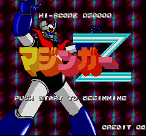

Mazinger Z - SNES Games

Controls
- A button: Select Weapon
- B button: Jump
- X button: [not used]
- Y button: Attack
- L button: Fire Left Arm Rocket
- R button: Fire Right Arm Rocket
- Start: Pause
- Select: [not used]
From Poon Jacob Tin Hang
Your arms can be used as rocket powered boomerangs. The game was an extremely brief (and somewhat wrong)
version of the Mazinger Z anime from Mazinger Z's first mission to the death of Dr. Hell. Holding the attack button
will block, providing at least an arm is attached to Mazinger's body. Up + Attack will use a weapon, providing
enough energy is available. Pressing Left/Right twice quickly will run.
Anime Video Game Resource Center © 1998 by Luis A. Cruz